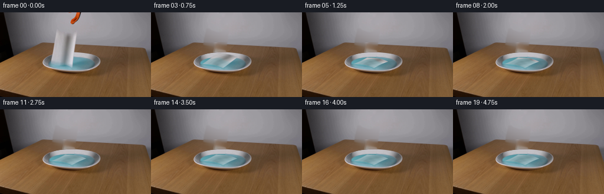
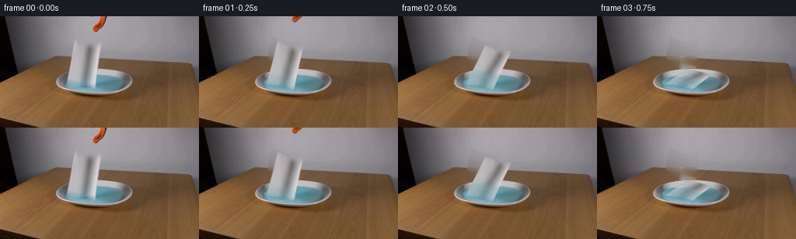
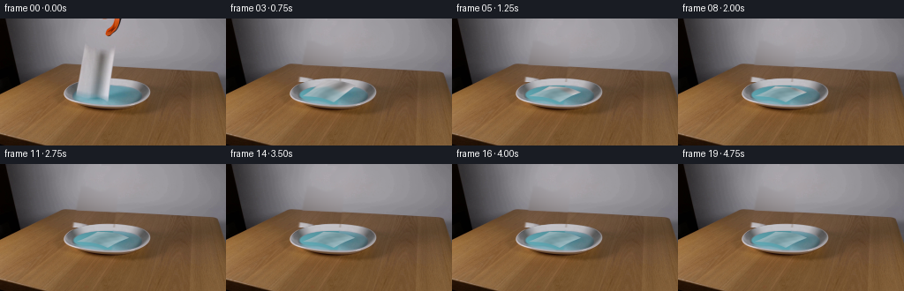
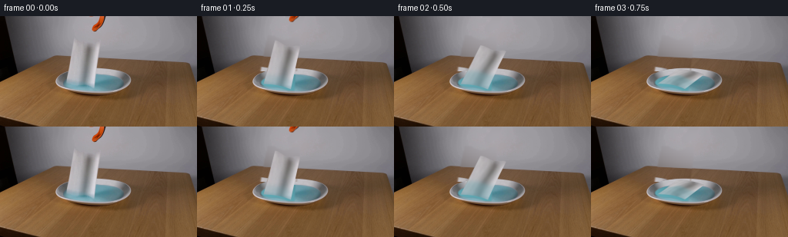
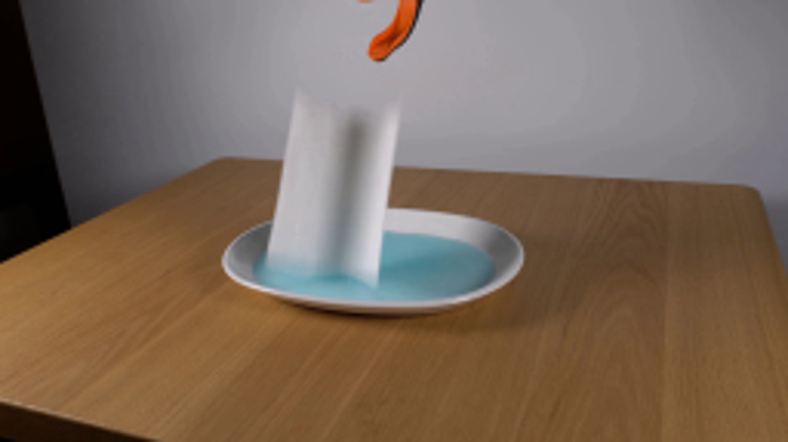
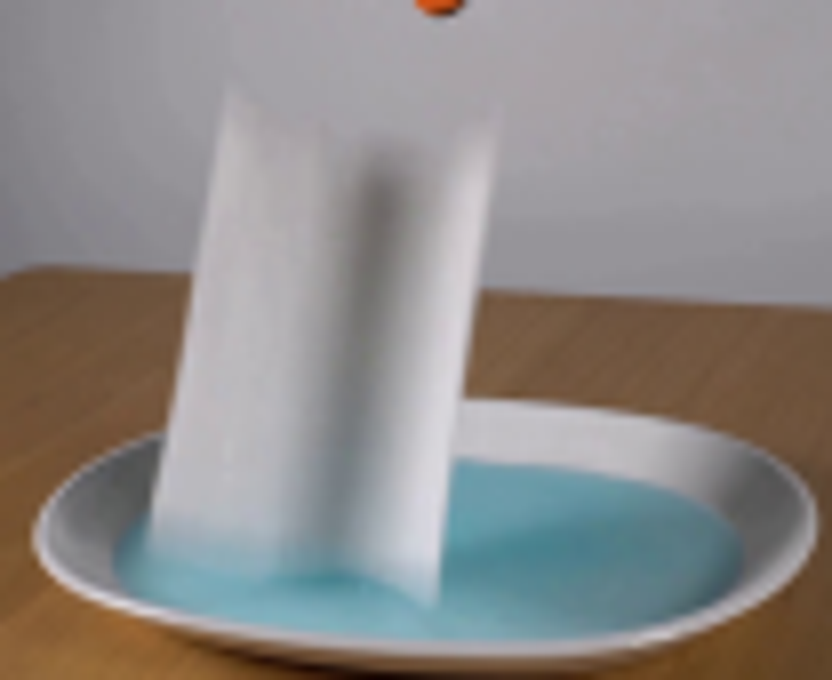
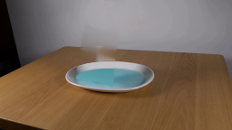
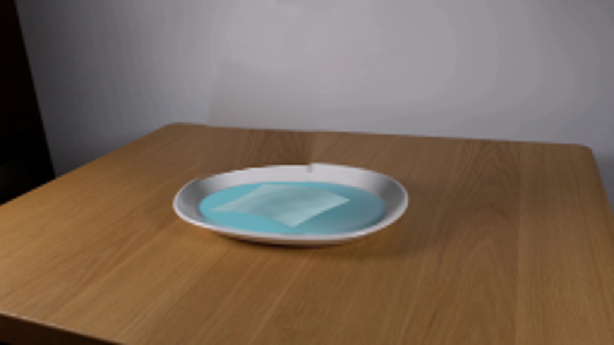

CODING AGENTS AS PIXEL WORLD MODELS
traex/GPT-6.1-Sol · 0129
点击播放 · 原生 RGB 像素
逐轮保存的候选
回放视频、检查图与代码变化。
每份候选均可单独播放。实际图片检查记录在下方工具轨迹中。
候选 01播放与检查图
点击播放 · 原生 RGB 像素


展开代码变化
--- 上一保存版本
+++ 本次保存版本
@@ -0,0 +1,185 @@
+from pathlib import Path
+import numpy as np
+import cv2
+from PIL import Image, ImageDraw
+from scipy.ndimage import gaussian_filter
+from artifact_io import save
+
+ROOT=Path(__file__).resolve().parent
+I=np.array(Image.open(ROOT/'first_frame.png').convert('RGB'))
+H,W=I.shape[:2]
+Y,X=np.mgrid[:H,:W].astype(np.float32)
+
+def poly_mask(points,scale=4):
+ im=Image.new('L',(W*scale,H*scale),0)
+ ImageDraw.Draw(im).polygon([(int(x*scale),int(y*scale)) for x,y in points],fill=255)
+ return np.array(im.resize((W,H),Image.Resampling.LANCZOS))/255.
+
+paper_poly=[(96,29),(100,32),(109,35),(115,36),(123,34),(130,30),(127,52),(124,74),(123,94),(116,91),(108,89),(98,89),(85,86),(88,68),(92,47)]
+paper_mask=poly_mask(paper_poly)
+erase=cv2.dilate((paper_mask*255).astype('uint8'),np.ones((5,5),np.uint8))
+erase=gaussian_filter(erase.astype(float)/255,0.65)
+tool_poly=[(115,-2),(139,-2),(138,3),(136,10),(131,16),(125,20),(120,20),(118,17),(120,13),(124,10),(127,6),(128,1),(116,1)]
+tool_mask=poly_mask(tool_poly)
+tool_erase=gaussian_filter(cv2.dilate((tool_mask*255).astype('uint8'),np.ones((3,3),np.uint8)).astype(float)/255,0.6)
+fullmask=np.maximum(erase,tool_erase)
+bg=cv2.inpaint(I,(fullmask>0.12).astype('uint8')*255,5,cv2.INPAINT_TELEA).astype(float)
+# The exposed back wall is a smooth, fixed, out-of-focus surface.
+wall=(Y<55)&(fullmask<.02)&(X>68)&(X<195)
+feat=np.stack([np.ones_like(X),X/128,Y/72,(X/128)**2,(Y/72)**2,X*Y/(128*72)],-1)
+coeff=np.linalg.lstsq(feat[wall],I[wall].astype(float),rcond=None)[0]
+wall_new=feat@coeff
+bg=np.where(((Y<51)&(fullmask>.01))[...,None],wall_new,bg)
+# Recover the obscured portion of the dish from its exposed, opposite half.
+# Parameterization preserves the elliptic back lip and sloping inside wall.
+cx,cy,rx,ry=121.65,84.2,48.6,17.3
+r=((X-cx)/rx)**2+((Y-cy)/ry)**2
+inside=r<1.03
+sx=2*cx-X
+sy=Y.copy()
+# A clean source column is used for the small central strip hidden on both halves.
+bad=sx<130.6
+src_x=np.maximum(sx,131.0)
+fac1=np.sqrt(np.maximum(0.02,1-((X-cx)/rx)**2))
+fac2=np.sqrt(np.maximum(0.02,1-((src_x-cx)/rx)**2))
+sy=np.where(bad,cy+(Y-cy)*fac2/fac1,Y)
+mirror=cv2.remap(I,src_x.astype('float32'),sy.astype('float32'),cv2.INTER_LINEAR,borderMode=cv2.BORDER_REFLECT).astype(float)
+# Small illumination correction: the left part catches more diffuse light.
+mirror+=np.maximum(0,cx-X)[...,None]*np.array([.055,.13,.15])
+mix=np.clip((1.035-r)/.08,0,1)*erase
+bg=bg*(1-mix[...,None])+mirror*mix[...,None]
+# Eliminate the reflected pale paper pixels on the water using a fitted surface.
+liq=((X-121.4)/39.8)**2+((Y-86.15)/11.1)**2
+samples=(liq<.84)&(erase<.02)&(X>125)
+f=np.stack([np.ones_like(X),(X-121)/40,(Y-86)/11,((X-121)/40)**2,((Y-86)/11)**2,((X-121)/40)*((Y-86)/11)],-1)
+# Smooth blue shading with a brighter diffuse reflection on the left.
+colors=np.array([87.,154.,165.])[None,None,:]+(X-120)[...,None]*np.array([-.16,-.16,-.16])+ (Y-85)[...,None]*np.array([.65,.9,.95])
+colors+=np.exp(-((X-94)/14)**2-((Y-90)/6)**2)[...,None]*np.array([2.,5.,5.])
+waterpatch=erase*np.clip((1.0-liq)/.12,0,1)
+bg=bg*(1-waterpatch[...,None])+colors*waterpatch[...,None]
+# Composite only changed areas, leaving table, lip, shadows and camera exactly fixed.
+bg=I*(1-fullmask[...,None])+bg*fullmask[...,None]
+bg=np.clip(bg,0,255)
+Image.fromarray(bg.astype('uint8')).save(ROOT/'.tmp/background.png')
+
+# Dense material-coordinate texture of the actual sheet, with the initial central fold.
+TU,TV=180,260
+v,u=np.mgrid[0:TV,0:TU].astype(np.float32)
+u=u/(TU-1);v=v/(TV-1)
+x0=96+33*u; x1=86+36*u
+ystart=30+6*np.sin(np.pi*u)**2
+yend=86+7*u-1.8*np.sin(np.pi*u)
+srcx=(1-v)*x0+v*x1-.5*np.sin(np.pi*v)
+srcy=(1-v)*ystart+v*yend
+tex=cv2.remap(I,srcx,srcy,cv2.INTER_LINEAR,borderMode=cv2.BORDER_REFLECT).astype(float)
+# Preserve the central groove but remove changing background contamination at the perimeter.
+alpha=np.minimum.reduce([u*TU/2.0,(1-u)*TU/2.0,v*TV/3.0,(1-v)*TV/3.0,np.ones_like(u)])
+alpha=np.clip(alpha,0,1).astype(np.float32)
+
+# Antialiased piecewise-affine rasterizer; vertex projection bends the wet sheet.
+S=4
+HH,WW=H*S,W*S
+nU,nV=18,36
+gu,gv=np.meshgrid(np.linspace(0,1,nU),np.linspace(0,1,nV))
+
+def geometry(t):
+ # Release, gravitational fall, then a damped soft collapse on the water.
+ p=np.clip((t-.02)/.80,0,1)
+ ease=1-(1-p*p)**1.35
+ theta=(np.pi/2)*ease
+ drop=4.0*(1-np.exp(-t*5))
+ U,V=gu,gv
+ length=1-V
+ # The sheet tips away to the right, compressing as capillary forces soften it.
+ shortening=1-.24*ease
+ px=86+36*U+length*((10-3*U)*np.cos(theta)+32*np.sin(theta)*shortening)
+ py=86+7*U-1.8*np.sin(np.pi*U)-length*(56-1*U-6*np.sin(np.pi*U)**2)*np.cos(theta)
+ py-=length*15*np.sin(theta)*shortening
+ # Bottom is drawn under slightly; upper edge is arrested by the liquid surface.
+ py+=drop*(1-.5*ease)
+ # A longitudinal crease and several material wrinkles slump into shallow soft folds.
+ fold=np.sin(np.pi*U)*np.sin(np.pi*V)
+ px+=ease*(2.1*np.sin(2*np.pi*V+.4)*np.sin(np.pi*U)+1.3*np.sin(np.pi*U))
+ py+=ease*(-2.0*fold+1.0*np.sin(3*np.pi*U+.8)*np.sin(np.pi*V))
+ # Low energy settling, no ongoing movement after the towel has come to rest.
+ settle=np.exp(-max(0,t-.8)*3.0)*ease
+ py+=.55*settle*np.sin(9*(t-.8)+V*2)*np.sin(np.pi*V)
+ px+=.5*settle*np.sin(7*t+U*2)*np.sin(np.pi*V)
+ return px,py,ease
+
+def make_material(t,ease):
+ # Wetting advances from the contacted lower edge and then through the whole towel.
+ front=np.clip(.14+.22*t+.23*ease,0,1.02)
+ wet=1/(1+np.exp(np.clip(-(v-(1-front))*35,-35,35)))
+ wet*=np.clip(t*2+.14,0,1)
+ # More overhead light is seen as the sheet lays on the dish.
+ dry=tex.copy()
+ flat=178+19*np.cos(2*np.pi*(u-.1))-24*np.exp(-((u-.58)/.115)**2)
+ dry=dry*(1-.48*ease)+np.stack([flat,flat+1,flat+2],-1)*(.48*ease)
+ tint=np.stack([118+10*np.cos(2*np.pi*u),166+7*np.cos(2*np.pi*u),175+7*np.cos(2*np.pi*u)],-1)
+ strength=wet*(.34+.36*(1-np.exp(-t)))
+ mat=dry*(1-strength[...,None])+tint*strength[...,None]
+ wrinkle=(2.6*np.sin(u*31+v*10)+1.9*np.sin(v*22-u*4))*ease
+ mat+=wrinkle[...,None]
+ return np.clip(mat,0,255).astype(np.float32)
+
+# Render by triangulating the continuous surface, retaining the original fabric texture.
+def render_paper(t):
+ px,py,ease=geometry(t)
+ mat=make_material(t,ease)
+ texture=np.dstack([mat*alpha[...,None],alpha*255]).astype(np.float32)
+ canvas=np.zeros((HH,WW,4),np.float32)
+ # Bottom-to-top makes the upturned soft folds occlude correctly.
+ for j in range(nV-1):
+ for k in range(nU-1):
+ for ids in [((j,k),(j+1,k),(j,k+1)),((j,k+1),(j+1,k),(j+1,k+1))]:
+ sp=np.float32([[gu[a,b]*(TU-1),gv[a,b]*(TV-1)] for a,b in ids])
+ dp=np.float32([[px[a,b]*S,py[a,b]*S] for a,b in ids])
+ x,y,w,h=cv2.boundingRect(dp)
+ if x<0 or y<0 or x+w>WW or y+h>HH: continue
+ aff=cv2.getAffineTransform(sp,dp-np.array([x,y],np.float32))
+ patch=cv2.warpAffine(texture,aff,(w,h),flags=cv2.INTER_LINEAR,borderMode=cv2.BORDER_CONSTANT)
+ m=np.zeros((h,w),np.float32)
+ cv2.fillConvexPoly(m,np.round(dp-[x,y]).astype(np.int32),1)
+ area=canvas[y:y+h,x:x+w]
+ # overwrite shared triangle edges in premultiplied representation
+ area[:]=area*(1-m[...,None])+patch*m[...,None]
+ canvas=cv2.resize(canvas,(W,H),interpolation=cv2.INTER_AREA)
+ canvas=gaussian_filter(canvas,sigma=(.37,.37,0))
+ a=np.clip(canvas[:,:,3]/255,0,1)
+ return canvas[:,:,:3],a
+
+def moving_tool(t):
+ shift=2+42*t
+ # The released grabber immediately retracts upwards out of the fixed shot.
+ M=np.float32([[1,0,0],[0,1,-shift]])
+ a=cv2.warpAffine(tool_mask.astype('float32'),M,(W,H),flags=cv2.INTER_LINEAR)
+ premul=cv2.warpAffine((I*tool_mask[...,None]).astype('float32'),M,(W,H),flags=cv2.INTER_LINEAR)
+ return premul,a
+
+frames=[I.copy()]
+for i in range(1,20):
+ t=i/4.
+ frame=bg.copy()
+ # Small outward capillary waves, masked to the blue fluid only.
+ water=np.clip((.99-liq)/.10,0,1)
+ age=max(0,t-.15)
+ dist=np.sqrt(((X-114)/1.25)**2+((Y-86)/.34)**2)
+ ripple=np.zeros((H,W),float)
+ for launch in [.12,.40,.68]:
+ a=t-launch
+ if a>0:
+ radius=5+27*a
+ ripple+=1.6*np.exp(-a*1.7)*np.sin((dist-radius)*1.25)*np.exp(-((dist-radius)/3.6)**2)
+ frame+=ripple[...,None]*water[...,None]*np.array([.85,1.,1.1])
+ paper,a=render_paper(t)
+ # Narrow, weak contact shadows under the new folds rather than a hovering sheet.
+ if t>.55:
+ sh=gaussian_filter(a,1.1)-a
+ frame-=np.maximum(sh,0)[...,None]*water[...,None]*np.array([6,8,8])
+ frame=frame*(1-a[...,None])+paper
+ tool,ta=moving_tool(t)
+ frame=frame*(1-ta[...,None])+tool
+ frames.append(np.clip(np.round(frame),0,255).astype('uint8'))
+frames=np.stack(frames)
+save(frames,ROOT)
候选 02播放与检查图
点击播放 · 原生 RGB 像素

展开代码变化
--- 上一保存版本
+++ 本次保存版本
@@ -17,8 +17,8 @@
paper_poly=[(96,29),(100,32),(109,35),(115,36),(123,34),(130,30),(127,52),(124,74),(123,94),(116,91),(108,89),(98,89),(85,86),(88,68),(92,47)]
paper_mask=poly_mask(paper_poly)
-erase=cv2.dilate((paper_mask*255).astype('uint8'),np.ones((5,5),np.uint8))
-erase=gaussian_filter(erase.astype(float)/255,0.65)
+erase=cv2.dilate((paper_mask*255).astype('uint8'),np.ones((9,9),np.uint8))
+erase=gaussian_filter(erase.astype(float)/255,0.9)
tool_poly=[(115,-2),(139,-2),(138,3),(136,10),(131,16),(125,20),(120,20),(118,17),(120,13),(124,10),(127,6),(128,1),(116,1)]
tool_mask=poly_mask(tool_poly)
tool_erase=gaussian_filter(cv2.dilate((tool_mask*255).astype('uint8'),np.ones((3,3),np.uint8)).astype(float)/255,0.6)
@@ -29,7 +29,15 @@
feat=np.stack([np.ones_like(X),X/128,Y/72,(X/128)**2,(Y/72)**2,X*Y/(128*72)],-1)
coeff=np.linalg.lstsq(feat[wall],I[wall].astype(float),rcond=None)[0]
wall_new=feat@coeff
-bg=np.where(((Y<51)&(fullmask>.01))[...,None],wall_new,bg)
+table_edge=51.2+.049*(X-74)
+wallmix=np.clip((table_edge-Y)/1.2+.55,0,1)
+# Rebuild the little occluded patch of wood with nearby grain at the same depth.
+woodx=X+58
+woody=Y+58*.049
+wood=cv2.remap(I,woodx.astype('float32'),woody.astype('float32'),cv2.INTER_LINEAR,borderMode=cv2.BORDER_REFLECT).astype(float)
+wood+=np.array([1.,0.,0.])
+recovery=wood*(1-wallmix[...,None])+wall_new*wallmix[...,None]
+bg=np.where(((Y<72)&(fullmask>.01))[...,None],recovery,bg)
# Recover the obscured portion of the dish from its exposed, opposite half.
# Parameterization preserves the elliptic back lip and sloping inside wall.
cx,cy,rx,ry=121.65,84.2,48.6,17.3
候选 03播放与检查图
点击播放 · 原生 RGB 像素


展开代码变化
--- 上一保存版本
+++ 本次保存版本
@@ -32,22 +32,22 @@
table_edge=51.2+.049*(X-74)
wallmix=np.clip((table_edge-Y)/1.2+.55,0,1)
# Rebuild the little occluded patch of wood with nearby grain at the same depth.
-woodx=X+58
-woody=Y+58*.049
+woodx=X+90
+woody=Y+90*.049
wood=cv2.remap(I,woodx.astype('float32'),woody.astype('float32'),cv2.INTER_LINEAR,borderMode=cv2.BORDER_REFLECT).astype(float)
wood+=np.array([1.,0.,0.])
recovery=wood*(1-wallmix[...,None])+wall_new*wallmix[...,None]
bg=np.where(((Y<72)&(fullmask>.01))[...,None],recovery,bg)
# Recover the obscured portion of the dish from its exposed, opposite half.
# Parameterization preserves the elliptic back lip and sloping inside wall.
-cx,cy,rx,ry=121.65,84.2,48.6,17.3
+cx,cy,rx,ry=121.65,84.8,48.6,16.2
r=((X-cx)/rx)**2+((Y-cy)/ry)**2
inside=r<1.03
sx=2*cx-X
sy=Y.copy()
# A clean source column is used for the small central strip hidden on both halves.
-bad=sx<130.6
-src_x=np.maximum(sx,131.0)
+bad=sx<142.0
+src_x=np.maximum(sx,142.0)
fac1=np.sqrt(np.maximum(0.02,1-((X-cx)/rx)**2))
fac2=np.sqrt(np.maximum(0.02,1-((src_x-cx)/rx)**2))
sy=np.where(bad,cy+(Y-cy)*fac2/fac1,Y)
@@ -61,12 +61,15 @@
samples=(liq<.84)&(erase<.02)&(X>125)
f=np.stack([np.ones_like(X),(X-121)/40,(Y-86)/11,((X-121)/40)**2,((Y-86)/11)**2,((X-121)/40)*((Y-86)/11)],-1)
# Smooth blue shading with a brighter diffuse reflection on the left.
-colors=np.array([87.,154.,165.])[None,None,:]+(X-120)[...,None]*np.array([-.16,-.16,-.16])+ (Y-85)[...,None]*np.array([.65,.9,.95])
-colors+=np.exp(-((X-94)/14)**2-((Y-90)/6)**2)[...,None]*np.array([2.,5.,5.])
+samples=(liq<.80)&(erase<.02)&((X>130)|(X<88))
+water_coeff=np.linalg.lstsq(f[samples],I[samples].astype(float),rcond=None)[0]
+colors=np.clip(f@water_coeff,[65,119,130],[105,170,183])
waterpatch=erase*np.clip((1.0-liq)/.12,0,1)
bg=bg*(1-waterpatch[...,None])+colors*waterpatch[...,None]
# Composite only changed areas, leaving table, lip, shadows and camera exactly fixed.
bg=I*(1-fullmask[...,None])+bg*fullmask[...,None]
+blueblend=np.clip((.99-liq)/.18,0,1)
+bg=bg*(1-blueblend[...,None])+colors*blueblend[...,None]
bg=np.clip(bg,0,255)
Image.fromarray(bg.astype('uint8')).save(ROOT/'.tmp/background.png')
候选 04播放与检查图
可观测工具轨迹
实际执行的命令与返回图片。
命令 1exit 0
/bin/bash -lc 'ls -la && cat prompt.txt && cat GENERATION_RULES.md'
命令 2exit 0
/bin/bash -lc "cat artifact_io.py && python - <<'PY'
from PIL import Image
im=Image.open('first_frame.png'); print(im.size); im.resize((1024,576)).save('.tmp/large.png')
PY"命令 3exit 0
/bin/bash -lc "python - <<'PY'
import cv2,scipy,numpy
print('cv2',cv2.__version__)
PY"命令 4exit 0
/bin/bash -lc "python - <<'PY'
from PIL import Image
im=Image.open('first_frame.png')
im.crop((68,18,172,103)).resize((832,680)).save('.tmp/towelcrop.png')
PY"命令 5exit 0
/bin/bash -lc "python - <<'PY'
from PIL import Image
im=Image.open('first_frame.png'); im.crop((110,0,145,25)).resize((560,400)).save('.tmp/tool.png')
PY"命令 6exit 0
/bin/bash -lc "cat > generate.py <<'PY'
from pathlib import Path
import numpy as np
import cv2
from PIL import Image, ImageDraw
from scipy.ndimage import gaussian_filter
from artifact_io import save
ROOT=Path(__file__).resolve().parent
I=np.array(Image.open(ROOT/'first_frame.png').convert('RGB'))
H,W=I.shape[:2]
Y,X=np.mgrid[:H,:W].astype(np.float32)
def poly_mask(points,scale=4):
im=Image.new('L',(W*scale,H*scale),0)
ImageDraw.Draw(im).polygon([(int(x*scale),int(y*scale)) for x,y in points],fill=255)
return np.array(im.resize((W,H),Image.Resampling.LANCZOS))/255.
paper_poly=[(96,29),(100,32),(109,35),(115,36),(123,34),(130,30),(127,52),(124,74),(123,94),(116,91),(108,89),(98,89),(85,86),(88,68),(92,47)]
paper_mask=poly_mask(paper_poly)
erase=cv2.dilate((paper_mask*255).astype('uint8'),np.ones((5,5),np.uint8))
erase=gaussian_filter(erase.astype(float)/255,0.65)
tool_poly=[(115,-2),(139,-2),(138,3),(136,10),(131,16),(125,20),(120,20),(118,17),(120,13),(124,10),(127,6),(128,1),(116,1)]
tool_mask=poly_mask(tool_poly)
tool_erase=gaussian_filter(cv2.dilate((tool_mask*255).astype('uint8'),np.ones((3,3),np.uint8)).astype(float)/255,0.6)
fullmask=np.maximum(erase,tool_erase)
bg=cv2.inpaint(I,(fullmask>0.12).astype('uint8')*255,5,cv2.INPAINT_TELEA).astype(float)
# The exposed back wall is a smooth, fixed, out-of-focus surface.
wall=(Y<55)&(fullmask<.02)&(X>68)&(X<195)
feat=np.stack([np.ones_like(X),X/128,Y/72,(X/128)**2,(Y/72)**2,X*Y/(128*72)],-1)
coeff=np.linalg.lstsq(feat[wall],I[wall].astype(float),rcond=None)[0]
wall_new=feat@coeff
bg=np.where(((Y<51)&(fullmask>.01))[...,None],wall_new,bg)
# Recover the obscured portion of the dish from its exposed, opposite half.
# Parameterization preserves the elliptic back lip and sloping inside wall.
cx,cy,rx,ry=121.65,84.2,48.6,17.3
r=((X-cx)/rx)**2+((Y-cy)/ry)**2
inside=r<1.03
sx=2*cx-X
sy=Y.copy()
# A clean source column is used for the small central strip hidden on both halves.
bad=sx<130.6
src_x=np.maximum(sx,131.0)
fac1=np.sqrt(np.maximum(0.02,1-((X-cx)/rx)**2))
fac2=np.sqrt(np.maximum(0.02,1-((src_x-cx)/rx)**2))
sy=np.where(bad,cy+(Y-cy)*fac2/fac1,Y)
mirror=cv2.remap(I,src_x.astype('float32'),sy.astype('float32'),cv2.INTER_LINEAR,borderMode=cv2.BORDER_REFLECT).astype(float)
# Small illumination correction: the left part catches more diffuse light.
mirror+=np.maximum(0,cx-X)[...,None]*np.array([.055,.13,.15])
mix=np.clip((1.035-r)/.08,0,1)*erase
bg=bg*(1-mix[...,None])+mirror*mix[...,None]
# Eliminate the reflected pale paper pixels on the water using a fitted surface.
liq=((X-121.4)/39.8)**2+((Y-86.15)/11.1)**2
samples=(liq<.84)&(erase<.02)&(X>125)
f=np.stack([np.ones_like(X),(X-121)/40,(Y-86)/11,((X-121)/40)**2,((Y-86)/11)**2,((X-121)/40)*((Y-86)/11)],-1)
# Smooth blue shading with a brighter diffuse reflection on the left.
colors=np.array([87.,154.,165.])[None,None,:]+(X-120)[...,None]*np.array([-.16,-.16,-.16])+ (Y-85)[...,None]*np.array([.65,.9,.95])
colors+=np.exp(-((X-94)/14)**2-((Y-90)/6)**2)[...,None]*np.array([2.,5.,5.])
waterpatch=erase*np.clip((1.0-liq)/.12,0,1)
bg=bg*(1-waterpatch[...,None])+colors*waterpatch[...,None]
# Composite only changed areas, leaving table, lip, shadows and camera exactly fixed.
bg=I*(1-fullmask[...,None])+bg*fullmask[...,None]
bg=np.clip(bg,0,255)
Image.fromarray(bg.astype('uint8')).save(ROOT/'.tmp/background.png')
# Dense material-coordinate texture of the actual sheet, with the initial central fold.
TU,TV=180,260
v,u=np.mgrid[0:TV,0:TU].astype(np.float32)
u=u/(TU-1);v=v/(TV-1)
x0=96+33*u; x1=86+36*u
ystart=30+6*np.sin(np.pi*u)**2
yend=86+7*u-1.8*np.sin(np.pi*u)
srcx=(1-v)*x0+v*x1-.5*np.sin(np.pi*v)
srcy=(1-v)*ystart+v*yend
tex=cv2.remap(I,srcx,srcy,cv2.INTER_LINEAR,borderMode=cv2.BORDER_REFLECT).astype(float)
# Preserve the central groove but remove changing background contamination at the perimeter.
alpha=np.minimum.reduce([u*TU/2.0,(1-u)*TU/2.0,v*TV/3.0,(1-v)*TV/3.0,np.ones_like(u)])
alpha=np.clip(alpha,0,1).astype(np.float32)
# Antialiased piecewise-affine rasterizer; vertex projection bends the wet sheet.
S=4
HH,WW=H*S,W*S
nU,nV=18,36
gu,gv=np.meshgrid(np.linspace(0,1,nU),np.linspace(0,1,nV))
def geometry(t):
# Release, gravitational fall, then a damped soft collapse on the water.
p=np.clip((t-.02)/.80,0,1)
ease=1-(1-p*p)**1.35
theta=(np.pi/2)*ease
drop=4.0*(1-np.exp(-t*5))
U,V=gu,gv
length=1-V
# The sheet tips away to the right, compressing as capillary forces soften it.
shortening=1-.24*ease
px=86+36*U+length*((10-3*U)*np.cos(theta)+32*np.sin(theta)*shortening)
py=86+7*U-1.8*np.sin(np.pi*U)-length*(56-1*U-6*np.sin(np.pi*U)**2)*np.cos(theta)
py-=length*15*np.sin(theta)*shortening
# Bottom is drawn under slightly; upper edge is arrested by the liquid surface.
py+=drop*(1-.5*ease)
# A longitudinal crease and several material wrinkles slump into shallow soft folds.
fold=np.sin(np.pi*U)*np.sin(np.pi*V)
px+=ease*(2.1*np.sin(2*np.pi*V+.4)*np.sin(np.pi*U)+1.3*np.sin(np.pi*U))
py+=ease*(-2.0*fold+1.0*np.sin(3*np.pi*U+.8)*np.sin(np.pi*V))
# Low energy settling, no ongoing movement after the towel has come to rest.
settle=np.exp(-max(0,t-.8)*3.0)*ease
py+=.55*settle*np.sin(9*(t-.8)+V*2)*np.sin(np.pi*V)
px+=.5*settle*np.sin(7*t+U*2)*np.sin(np.pi*V)
return px,py,ease
def make_material(t,ease):
# Wetting advances from the contacted lower edge and then through the whole towel.
front=np.clip(.14+.22*t+.23*ease,0,1.02)
wet=1/(1+np.exp(np.clip(-(v-(1-front))*35,-35,35)))
wet*=np.clip(t*2+.14,0,1)
# More overhead light is seen as the sheet lays on the dish.
dry=tex.copy()
flat=178+19*np.cos(2*np.pi*(u-.1))-24*np.exp(-((u-.58)/.115)**2)
dry=dry*(1-.48*ease)+np.stack([flat,flat+1,flat+2],-1)*(.48*ease)
tint=np.stack([118+10*np.cos(2*np.pi*u),166+7*np.cos(2*np.pi*u),175+7*np.cos(2*np.pi*u)],-1)
strength=wet*(.34+.36*(1-np.exp(-t)))
mat=dry*(1-strength[...,None])+tint*strength[...,None]
wrinkle=(2.6*np.sin(u*31+v*10)+1.9*np.sin(v*22-u*4))*ease
mat+=wrinkle[...,None]
return np.clip(mat,0,255).astype(np.float32)
# Render by triangulating the continuous surface, retaining the original fabric texture.
def render_paper(t):
px,py,ease=geometry(t)
mat=make_material(t,ease)
texture=np.dstack([mat*alpha[...,None],alpha*255]).astype(np.float32)
canvas=np.zeros((HH,WW,4),np.float32)
# Bottom-to-top makes the upturned soft folds occlude correctly.
for j in range(nV-1):
for k in range(nU-1):
for ids in [((j,k),(j+1,k),(j,k+1)),((j,k+1),(j+1,k),(j+1,k+1))]:
sp=np.float32([[gu[a,b]*(TU-1),gv[a,b]*(TV-1)] for a,b in ids])
dp=np.float32([[px[a,b]*S,py[a,b]*S] for a,b in ids])
x,y,w,h=cv2.boundingRect(dp)
if x<0 or y<0 or x+w>WW or y+h>HH: continue
aff=cv2.getAffineTransform(sp,dp-np.array([x,y],np.float32))
patch=cv2.warpAffine(texture,aff,(w,h),flags=cv2.INTER_LINEAR,borderMode=cv2.BORDER_CONSTANT)
m=np.zeros((h,w),np.float32)
cv2.fillConvexPoly(m,np.round(dp-[x,y]).astype(np.int32),1)
area=canvas[y:y+h,x:x+w]
# overwrite shared triangle edges in premultiplied representation
area[:]=area*(1-m[...,None])+patch*m[...,None]
canvas=cv2.resize(canvas,(W,H),interpolation=cv2.INTER_AREA)
canvas=gaussian_filter(canvas,sigma=(.37,.37,0))
a=np.clip(canvas[:,:,3]/255,0,1)
return canvas[:,:,:3],a
def moving_tool(t):
shift=2+42*t
# The released grabber immediately retracts upwards out of the fixed shot.
M=np.float32([[1,0,0],[0,1,-shift]])
a=cv2.warpAffine(tool_mask.astype('float32'),M,(W,H),flags=cv2.INTER_LINEAR)
premul=cv2.warpAffine((I*tool_mask[...,None]).astype('float32'),M,(W,H),flags=cv2.INTER_LINEAR)
return premul,a
frames=[I.copy()]
for i in range(1,20):
t=i/4.
frame=bg.copy()
# Small outward capillary waves, masked to the blue fluid only.
water=np.clip((.99-liq)/.10,0,1)
age=max(0,t-.15)
dist=np.sqrt(((X-114)/1.25)**2+((Y-86)/.34)**2)
ripple=np.zeros((H,W),float)
for launch in [.12,.40,.68]:
a=t-launch
if a>0:
radius=5+27*a
ripple+=1.6*np.exp(-a*1.7)*np.sin((dist-radius)*1.25)*np.exp(-((dist-radius)/3.6)**2)
frame+=ripple[...,None]*water[...,None]*np.array([.85,1.,1.1])
paper,a=render_paper(t)
# Narrow, weak contact shadows under the new folds rather than a hovering sheet.
if t>.55:
sh=gaussian_filter(a,1.1)-a
frame-=np.maximum(sh,0)[...,None]*water[...,None]*np.array([6,8,8])
frame=frame*(1-a[...,None])+paper
tool,ta=moving_tool(t)
frame=frame*(1-ta[...,None])+tool
frames.append(np.clip(np.round(frame),0,255).astype('uint8'))
frames=np.stack(frames)
save(frames,ROOT)
PY
python generate.py"命令 7exit 0
/bin/bash -lc "python - <<'PY'
from PIL import Image
import numpy as np
im=np.array(Image.open('first_frame.png'))
for y in [49,51,53,55,59,62,66,68,72,76,86]:
print(y,[(x,im[y,x].tolist()) for x in [80,85,90,96,100,110,125,133,140,150,170,180]])
PY"命令 8exit 0
/bin/bash -lc "python - <<'PY'
p='generate.py'
s=open(p).read().replace('np.ones((5,5),np.uint8)','np.ones((9,9),np.uint8)').replace('erase.astype(float)/255,0.65','erase.astype(float)/255,0.9')
s=s.replace(\"bg=np.where(((Y<51)&(fullmask>.01))[...,None],wall_new,bg)\",\"\"\"table_edge=51.2+.049*(X-74)
wallmix=np.clip((table_edge-Y)/1.2+.55,0,1)
# Rebuild the little occluded patch of wood with nearby grain at the same depth.
woodx=X+58
woody=Y+58*.049
wood=cv2.remap(I,woodx.astype('float32'),woody.astype('float32'),cv2.INTER_LINEAR,borderMode=cv2.BORDER_REFLECT).astype(float)
wood+=np.array([1.,0.,0.])
recovery=wood*(1-wallmix[...,None])+wall_new*wallmix[...,None]
bg=np.where(((Y<72)&(fullmask>.01))[...,None],recovery,bg)\"\"\")
open(p,'w').write(s)
PY
python generate.py"命令 9exit 0
/bin/bash -lc "python - <<'PY'
from PIL import Image
Image.open('.tmp/background.png').resize((1024,576)).save('.tmp/bglarge.png')
Image.open('frames/19.png').resize((1024,576)).save('.tmp/endlarge.png')
PY"命令 10exit 0
/bin/bash -lc "python - <<'PY'
p='generate.py';s=open(p).read().replace('woodx=X+58','woodx=X+90').replace('woody=Y+58*.049','woody=Y+90*.049').replace('cx,cy,rx,ry=121.65,84.2,48.6,17.3','cx,cy,rx,ry=121.65,84.8,48.6,16.2').replace('bad=sx<130.6','bad=sx<142.0').replace('src_x=np.maximum(sx,131.0)','src_x=np.maximum(sx,142.0)')
# Surface fit to smooth original water avoids a sharp boundary next to the occlusion.
a=s.index('colors=np.array(');b=s.index('# Composite only changed',a)
s=s[:a]+'''samples=(liq<.80)&(erase<.02)&((X>130)|(X<88))
water_coeff=np.linalg.lstsq(f[samples],I[samples].astype(float),rcond=None)[0]
colors=np.clip(f@water_coeff,[65,119,130],[105,170,183])
waterpatch=erase*np.clip((1.0-liq)/.12,0,1)
bg=bg*(1-waterpatch[...,None])+colors*waterpatch[...,None]
'''+s[b:]
# Extend restorative color blending slightly to eliminate any hard seams.
s=s.replace('bg=np.clip(bg,0,255)','''blueblend=np.clip((.99-liq)/.18,0,1)
bg=bg*(1-blueblend[...,None])+colors*blueblend[...,None]
bg=np.clip(bg,0,255)''')
open(p,'w').write(s)
PY
python generate.py
python - <<'PY'
from PIL import Image
Image.open('.tmp/background.png').resize((1024,576)).save('.tmp/bglarge.png')
Image.open('frames/19.png').resize((1024,576)).save('.tmp/endlarge.png')
PY"命令 11exit 0
/bin/bash -lc "python - <<'PY'
import numpy as np
from PIL import Image
z=np.load('pixels.npz')['pixels']
a=np.array(Image.open('first_frame.png').convert('RGB'),dtype=np.uint32)
p=(a[:,:,0]<<16)|(a[:,:,1]<<8)|a[:,:,2]
assert z.shape==(144,256,20)
assert np.array_equal(z[:,:,0],p)
assert np.array_equal(np.array(Image.open('frames/00.png')),a.astype('uint8'))
print('Validated: 20 RGB frames, 256Ã144, first frame exact.')
PY"视觉工具实际返回图片 1

视觉工具实际返回图片 2

视觉工具实际返回图片 3
视觉工具实际返回图片 4

视觉工具实际返回图片 5

视觉工具实际返回图片 6

视觉工具实际返回图片 7
视觉工具实际返回图片 8
视觉工具实际返回图片 9

保存候选 4 份；完成命令 11 次；可验证图片返回 9 张。原始 API 响应与完整日志保留在本地。